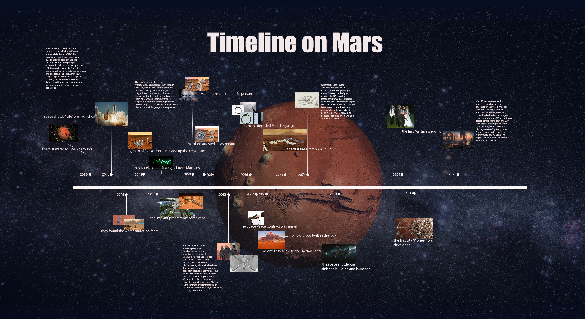

I’m Heru Wang, currently studying digital media art at SJSU. I have always been a visual person and passionate about art and design. I am from China and have an all-time appetite for Asian food.
Most of my inspiration is from my random thoughts about life that how I would react to the world surrounds me. I care about people, emotions, and all kinds of relationships. In response to that, my works focus on the viewer/user’s experiences and being able to deliver a positive attitude to the viewers. For example, in the project “What is your final destination?”, I created a map to get lost. From a list of things I care about, I chose that “I am aware of how busy people can become”. I experimented with couple tools to draw the map, then I decided to create a city that included everywhere we need to be. In order to show people’s business, I thought making a gif would express the idea clearer. Therefore, I explored after effect for the first time. I love this processing of creating and gathering my skills together to make my idea come true.
This project is to draw people’s attention on if they forget to check where their destination of life is and not to be drown in daily survival.Digital media is my third language besides mandarin and English to express my idea. I love the powerful impact it can make in this world. My future dream job is to become a UI/UX designer to help people with a better visual pleasure and using experience through digital media.
WEBSITE
https://hew040.wixsite.com/mysite-3  https://heruwang.github.io/p5/p5/p5-exercise-1/ https://heruwang.github.io/timetravel/VIDEO